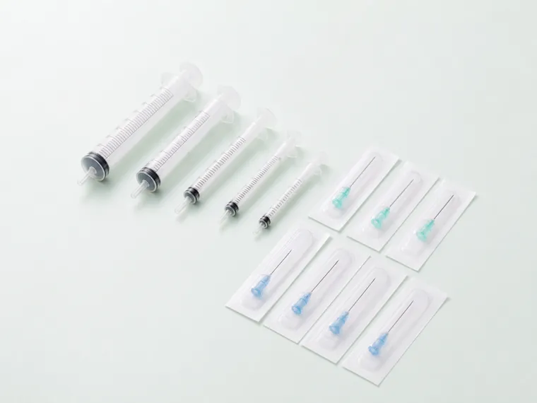
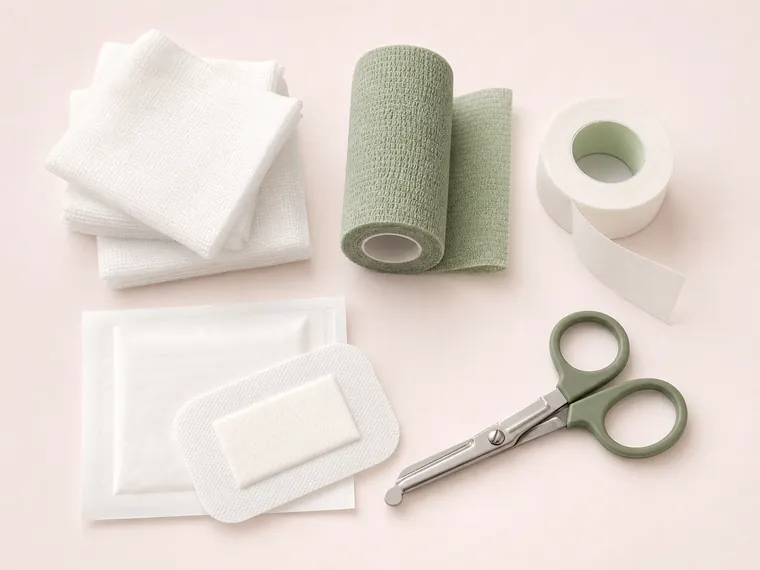
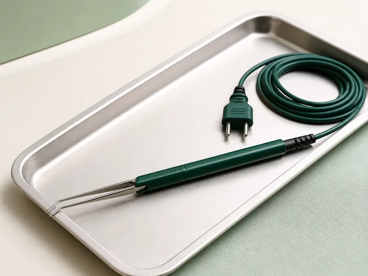
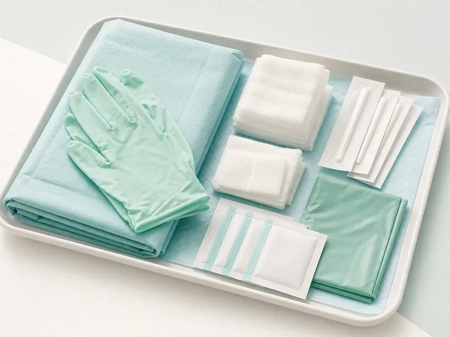
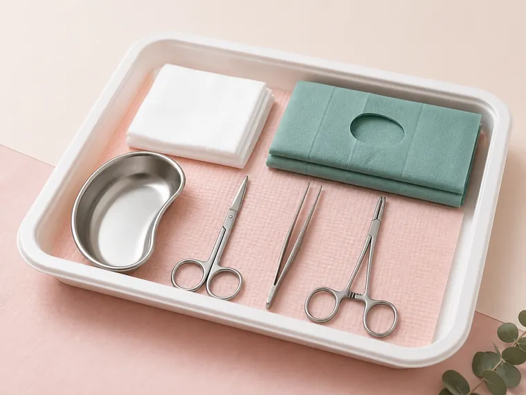

Sanoom startet bald
Mehr Zeit für Menschen. Weniger für Bestellungen.
Sanoom entwickelt einen neuen Einkaufsmanager für Praxen und MVZ – mit Praxisbedarf, eingriffsspezifischen Komplettsets und klaren Abläufen für ambulante Eingriffe und Hybrid-DRG.
Für Einzelpraxen und MVZ
Fokus ambulante Eingriffe
Passendes Komplettset findenMaterial je Eingriff gebündelt und planbar
Im Team abgestimmt
Eine Nachricht. Der Rest läuft.
So soll Sanoom kurze Absprachen künftig direkt mit Bestellung und Freigabe verbinden.
4-Minuten-Umfrage
Wie gut sind Praxen und MVZ auf Hybrid-DRG vorbereitet?
Teilen Sie Ihre Erfahrungen zu Ambulantisierung, Materialversorgung und Beschaffung. Die Umfrage gehört zum hDRG-Kompass und wird erst nach Ihrer bewussten Auswahl geladen.
4
Minuten, die helfen
Ihre Antworten fließen in die Weiterentwicklung praxisnaher Lösungen ein.
Bald
Sanoom befindet sich im Aufbau. Interessierte Praxen können sich schon jetzt melden.
Sets
Eingriffsspezifische Komplettsets mit planbaren Materialkosten pro Fall.
1 Ort
Bedarf, Freigaben und Nachweise sollen künftig übersichtlich zusammenlaufen.
Geplantes Sortiment
Vom Einzelartikel bis zum kompletten Eingriffsset.
Diese Vorschau zeigt die Richtung: täglicher Praxisbedarf, Instrumente sowie standardisierte Komplettsets für ambulante Eingriffe. Sortiment, Preise und Verfügbarkeit stehen noch nicht fest.


Sanoom Set

Sanoom Set

Kein passender Artikel gefunden.
Versuchen Sie einen Produktnamen, eine Kategorie oder eine Artikelnummer.
Versuchen Sie einen Produktnamen, eine Kategorie oder eine Artikelnummer.
Der digitale Einkaufsmanager
Vom Bestellstress zur bestätigten Lieferung.
Geplant ist ein Ablauf, den jede Person im Team sofort versteht: Bedarf erfassen, ärztlich freigeben und Status, Budget sowie Dokumente zusammenhalten.
01
Schnellbestellung
Artikel suchen, Bestellliste hochladen oder Barcode scannen.
02
Ärztliche Freigabe
Einzeln oder gesammelt, auch mobil zwischen zwei Terminen.
03
Papierlose Nachweise
Bestellung, Lieferschein und Rechnung bleiben nachvollziehbar verbunden.
So könnte es laufen
ProduktvorschauSKSandra erfasst den BedarfEinzelartikel und KomplettsetsSchritt 1
DWDr. Weber gibt gesammelt freiFreigabe am SmartphoneSchritt 2
SSanoom bündelt die BestellungStatus und Dokumente bleiben verbundenSchritt 3
„Endlich weiß jede im Team, was schon bestellt ist.“
Sanoom im Alltag
Alles im Blick. Nichts mehr im Kopf behalten.
Diese Funktionen sind geplant: Bestände, Freigaben, Lieferungen und Nachweise sollen an einem Ort zusammenlaufen.
Meine PraxisHeute
Materialversorgung
Alles im grünen Bereich.
Offene Freigaben1 Bestellung
Nächste LieferungNach Freigabe
MDR-Nachweise vollständig und aktuell
Meine Praxis
Bestände und offene Aufgaben sofort sehen.
Regelmäßige Lieferungen
Einmal freigeben, jederzeit anpassen.
Checklisten je Raum
Räume systematisch und sicher prüfen.
Budget & Kostenstellen
Ausgaben sauber zuordnen und verfolgen.
Praxisteam & Rollen
Bestellung und Freigabe klar verteilen.
MDR-Nachweise
Dokumente automatisch zusammenhalten.
Zum Start informieren lassen
Möchten Sie Sanoom früh kennenlernen?
Schreiben Sie uns kurz, ob Sie eine Einzelpraxis, größere Praxis oder ein MVZ vertreten. Wir melden uns, sobald es Neuigkeiten, Tests oder erste Zugangsmöglichkeiten gibt.
Direkter Kontakt
info@sanoom.de
Interesse vormerken
Unverbindlich. Keine automatische Newsletter-Anmeldung.